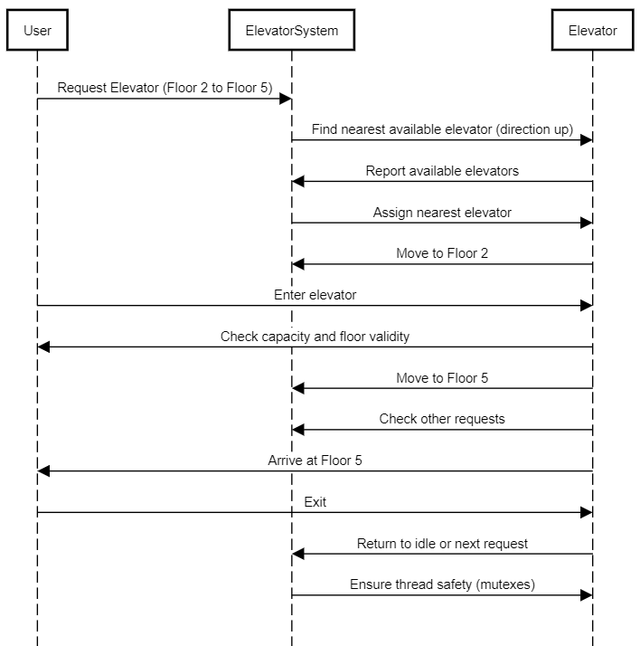

Designing an Elevator System
Requirements:
- The elevator system should consist of multiple elevators serving multiple floors.
- Each elevator should have a capacity limit and should not exceed it.
- Users should be able to request an elevator from any floor and select a destination floor.
- The elevator system should efficiently handle user requests and optimize the movement of elevators to minimize waiting time.
- The system should prioritize requests based on the direction of travel and the proximity of the elevators to the requested floor.
- The elevators should be able to handle multiple requests concurrently and process them in an optimal order.
- The system should ensure thread safety and prevent race conditions when multiple threads interact with the elevators.
Sequnece Diagram

System Components:
- Elevator: Represents an individual elevator with attributes like capacity, current floor, direction, and request queue.
- ElevatorSystem: Manages the elevator(s) and handles user requests.
- UserRequest: Represents a user's request, containing the source floor, destination floor, and user ID.
- Direction: Enum to track the direction of the elevator (UP, DOWN, IDLE).
Key Design Considerations:
- Request Handling: Requests should be queued and processed based on the proximity of elevators and the direction of travel.
- Capacity Management: Each elevator should have a capacity limit, and the system should ensure that the limit is not exceeded.
- Thread Safety: Synchronization mechanisms must be implemented to handle concurrent requests and prevent race conditions.
- Optimization: The elevator system should prioritize requests based on the direction of travel and minimize unnecessary movements.
Code Implementation:
import java.util.*;
import java.util.concurrent.*;
// Enum to represent the direction of the elevator
enum Direction {
UP, DOWN, IDLE
}
// Class representing a user request
class UserRequest {
int sourceFloor;
int destinationFloor;
public UserRequest(int sourceFloor, int destinationFloor) {
this.sourceFloor = sourceFloor;
this.destinationFloor = destinationFloor;
}
}
// Class representing the elevator
class Elevator {
private int capacity;
private int currentFloor;
private Direction direction;
private List requestQueue;
public Elevator(int capacity) {
this.capacity = capacity;
this.currentFloor = 0; // Assume starts at floor 0
this.direction = Direction.IDLE;
this.requestQueue = new LinkedList<>();
}
public synchronized void addRequest(UserRequest request) {
// Add a request to the elevator's queue
if (requestQueue.size() < capacity) {
requestQueue.add(request);
System.out.println("Request added to elevator on floor " + currentFloor);
} else {
System.out.println("Elevator at capacity, request cannot be added.");
}
}
public void processRequests() {
// Process the elevator's request queue
while (!requestQueue.isEmpty()) {
UserRequest request = requestQueue.remove(0);
moveToFloor(request.sourceFloor);
System.out.println("Elevator moving to floor " + request.sourceFloor);
moveToFloor(request.destinationFloor);
System.out.println("Elevator moving to floor " + request.destinationFloor);
}
}
private void moveToFloor(int floor) {
// Simulate elevator movement
while (currentFloor != floor) {
if (floor > currentFloor) {
currentFloor++;
direction = Direction.UP;
} else {
currentFloor--;
direction = Direction.DOWN;
}
System.out.println("Elevator moving " + direction + " to floor " + currentFloor);
}
direction = Direction.IDLE;
}
}
// Class representing the ElevatorSystem
class ElevatorSystem {
private List elevators;
private ExecutorService executorService;
public ElevatorSystem(int numElevators, int elevatorCapacity) {
elevators = new ArrayList<>();
for (int i = 0; i < numElevators; i++) {
elevators.add(new Elevator(elevatorCapacity));
}
executorService = Executors.newFixedThreadPool(numElevators);
}
public void requestElevator(UserRequest request) {
Elevator closestElevator = findClosestElevator(request.sourceFloor);
executorService.submit(() -> {
closestElevator.addRequest(request);
closestElevator.processRequests();
});
}
private Elevator findClosestElevator(int sourceFloor) {
Elevator closestElevator = elevators.get(0);
int minDistance = Math.abs(closestElevator.currentFloor - sourceFloor);
for (Elevator elevator : elevators) {
int distance = Math.abs(elevator.currentFloor - sourceFloor);
if (distance < minDistance) {
minDistance = distance;
closestElevator = elevator;
}
}
return closestElevator;
}
}
// Main application to simulate elevator system usage
public class ElevatorApp {
public static void main(String[] args) {
ElevatorSystem elevatorSystem = new ElevatorSystem(3, 5); // 3 elevators, each with a capacity of 5 requests
// Users requesting elevators
elevatorSystem.requestElevator(new UserRequest(0, 5));
elevatorSystem.requestElevator(new UserRequest(2, 7));
elevatorSystem.requestElevator(new UserRequest(5, 1));
}
}
Explanation of the Code:
- Elevator Class:
- Represents the elevator with attributes like
capacity, currentFloor, and direction.
- The
addRequest method adds a request to the elevator's queue, while processRequests handles the movement to each requested floor.
- The
moveToFloor method simulates the elevator's movement from one floor to another, updating its state.
- ElevatorSystem Class:
- Manages multiple elevators and assigns user requests to the closest available elevator.
- The
requestElevator method finds the closest elevator based on the source floor of the user's request and assigns it to process the request.
- Uses a fixed thread pool
ExecutorService to handle concurrent requests and ensure efficient processing.
- ExecutorService: Used to manage concurrent execution of requests in different elevators. Each elevator processes its own queue independently in a separate thread.
- UserRequest Class: Represents a user's request, including the source floor and destination floor.
Design Considerations:
- Capacity Management: Each elevator has a fixed capacity limit, and the system ensures that the elevator does not exceed it when processing requests.
- Request Distribution: Requests are assigned to the closest elevator to optimize waiting times. This can be further optimized with a more complex strategy based on load balancing.
- Concurrency: The system uses
ExecutorService to process requests concurrently. Each elevator processes its own requests in separate threads, avoiding race conditions by ensuring thread safety when adding requests to the queue.
Improvements & Extensions:
- Implement better optimization strategies for assigning requests based on the direction of travel and the load in each elevator.
- Handle more complex scenarios like elevators reaching capacity and unable to accept more requests.
- Implement a more sophisticated scheduling algorithm to prioritize requests (e.g., considering the current direction of the elevator).
- Add logging and error handling mechanisms for more robust production-level code.